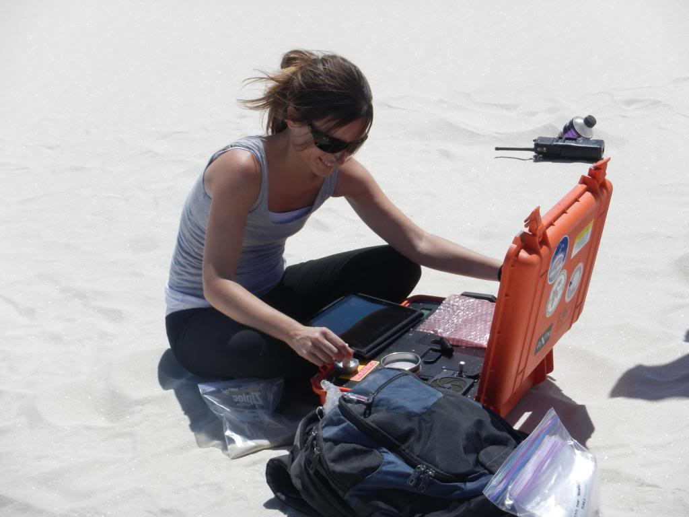
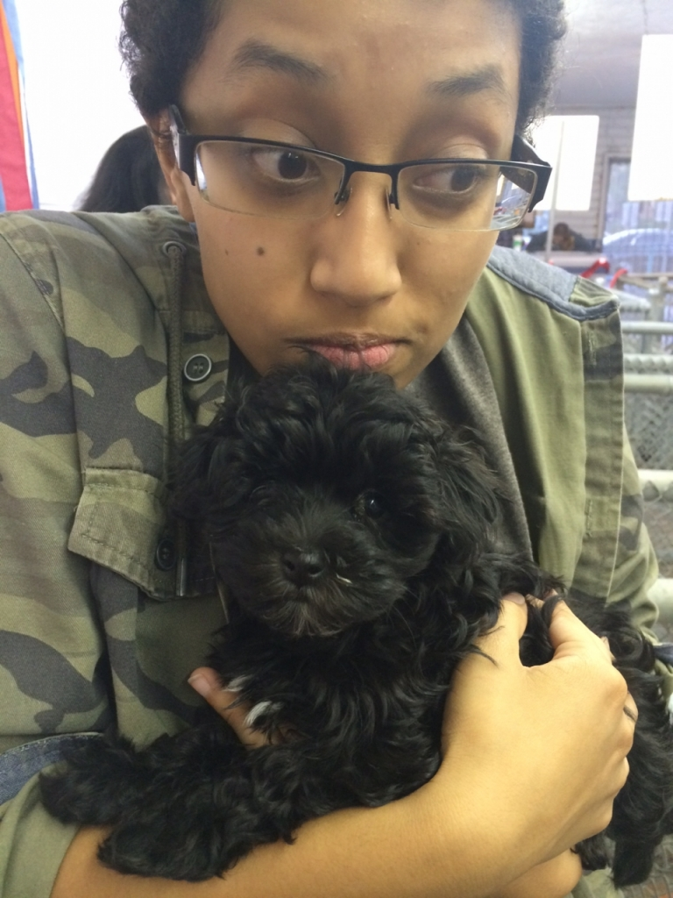
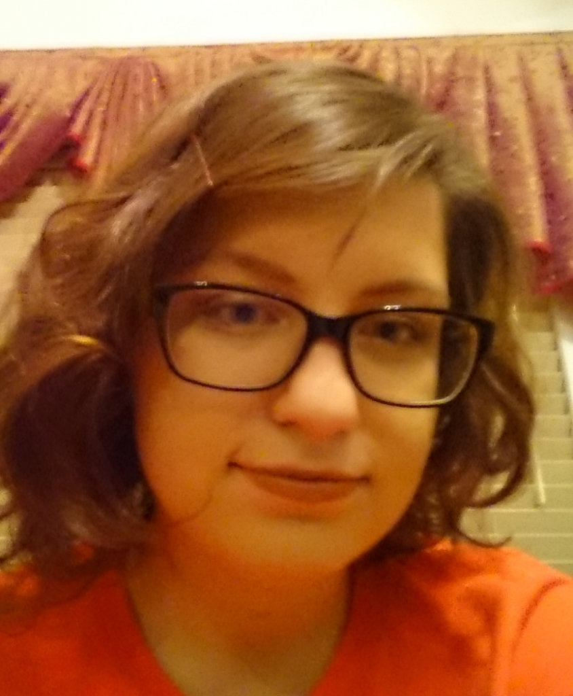

Meet Our Designers
Sahara Salas
Sahara Salas is a Tucson native who attend the University of Arizona for both her undergraduate and graduate studies. She specializes in educational design and previously worked as a worked as a middle school teacher before joining our team. She now works in the marketing department of the company.
Barbara Lafuente
Barbara Lafuente has a background in Chemical Engineering and Business Administration at the University of Valladolid (Spain). She is currently a PhD candidate in mineralogy and crystallography in the Department of Geosciences at the University of Arizona, Tucson (AZ). She works on the development of web-based databases for terrestrial application and planetary exploration. Her main focus is a database project funded by NASA to archive data on terrestrial analog materials. She also contributes to the RRUFF Project (http://rruff.info/) by identifying and characterizing minerals using various techniques including single crystal and powder X-Ray diffraction, Raman Spectroscopy and microprobe analysis
Daniella Stevans Almeida
Daniella Almeida graduated from the Uruguayan American School in Montevideo, Uruguay. She aspires to become an athletic trainer after she graduates from the University of Arizona, Tucson (AZ). Her desire to learn more about web design and creating websites has developed a side hobby. Due to her well travelled attitude she would like to be able to design website and pages for international companies.
Darian Vela
Darian Vela is a senior at the University of Arizona in Tucson, majoring in Computer Science and minoring in Chinese. In addition to web design, Darian has experience with Java, C, and Objective-C programming.
Anna Loukianova
Anna Loukianova is a senior Information Science, Technology and Art and Linguistics major at the U of A; Anna is currently working as a student software developer for iPlant Collaborative, which is an NSF funded project that offers cloud computing for research purposes. While not having too much web-designing experience initially, her can-do attitude and eagerness to learn has been an asset in her professional life.